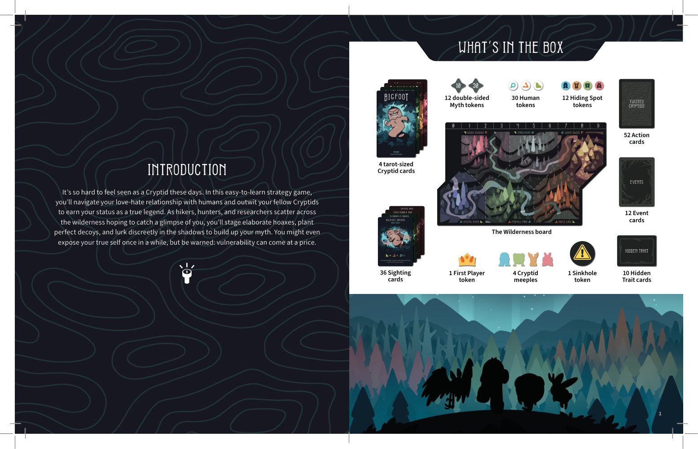
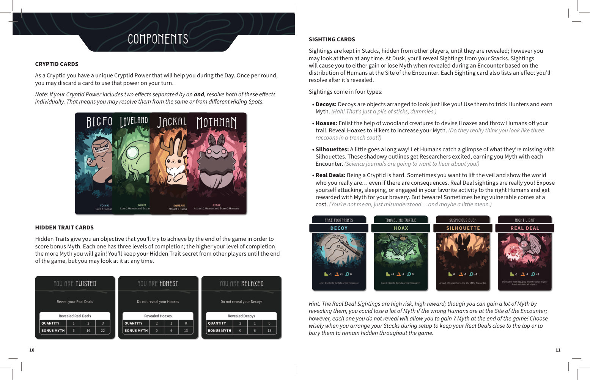
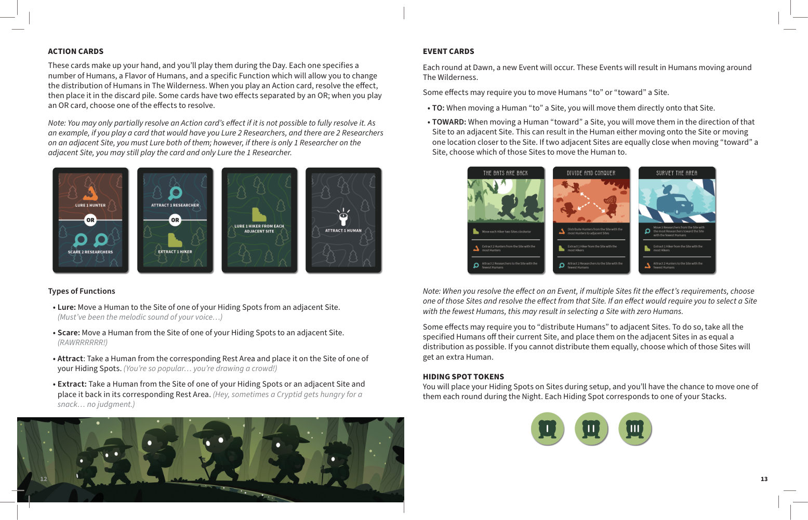
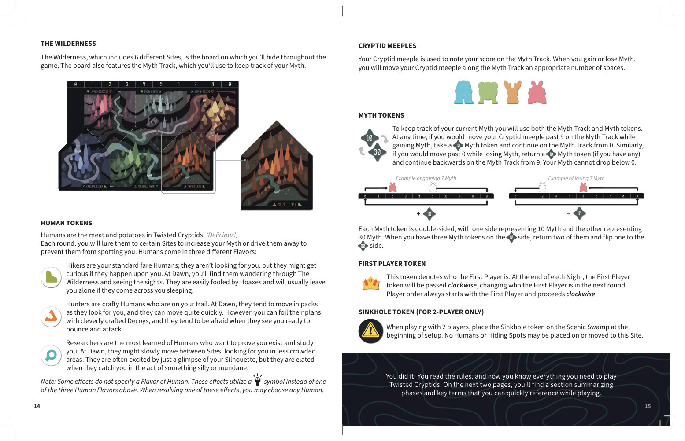
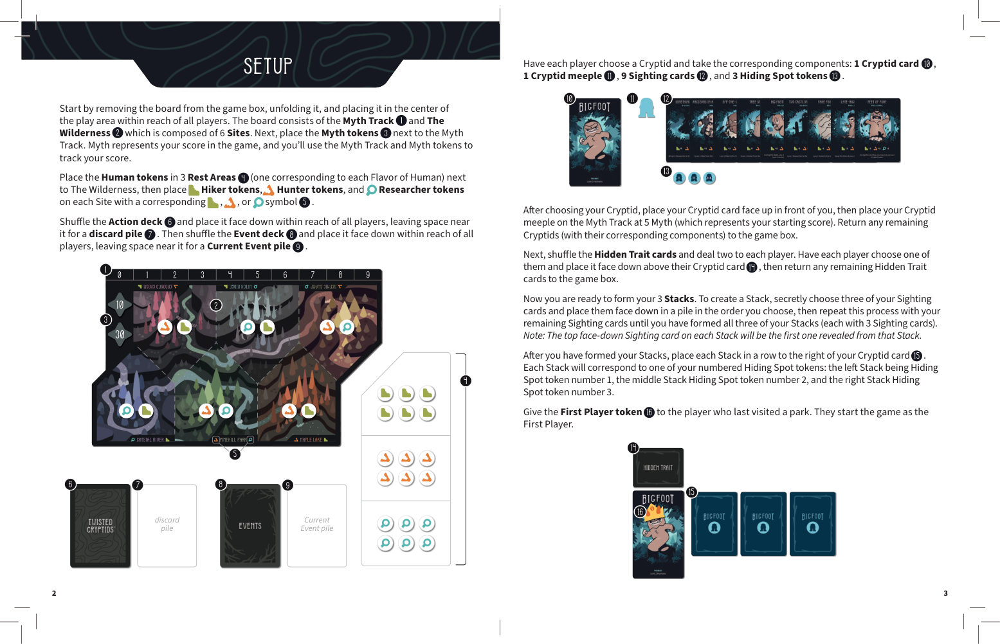
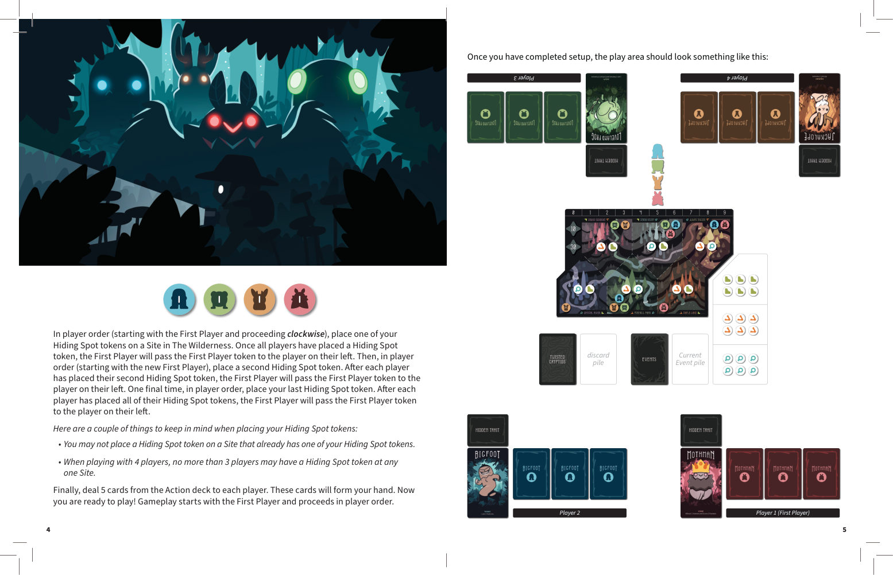
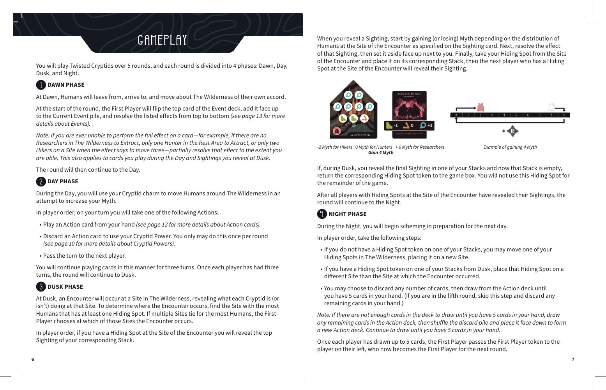
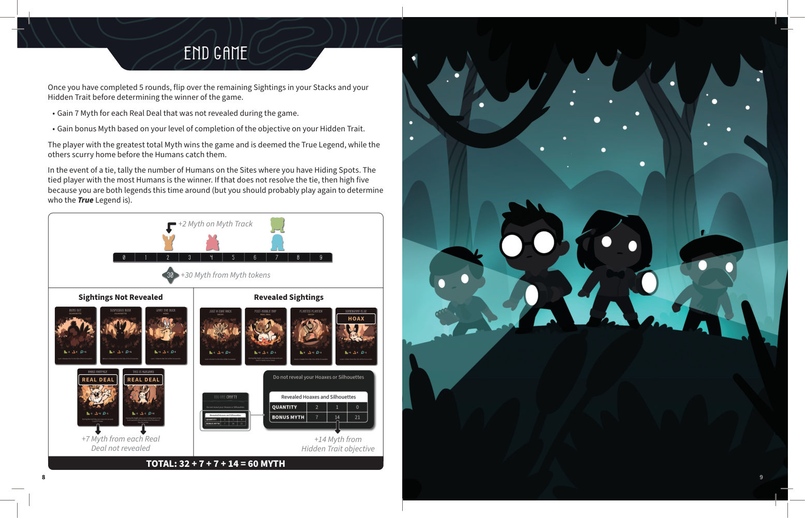
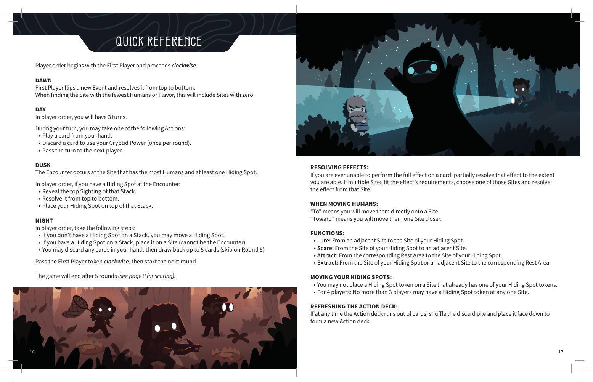

1概览
如今，作为一名神秘生物（Cryptid），想要被“看见”实在太难了。在这款易上手的策略游戏中，你将周旋于与人类之间又爱又恨的关系，并智胜其他神秘生物，以赢得真正传奇（True Legend）的称号。
当徒步者、猎人和研究员散布在荒野各处，希望能瞥见你一眼时，你可以精心策划骗局、布置完美的诱饵，或悄然潜伏于阴影中以积累神话值（Myth）。偶尔你也可以展露真身——但请注意：脆弱有时是要付出代价的。

2组件清单
3组件详解
神秘生物卡（Cryptid cards）
每位玩家扮演一种神秘生物，并拥有独特的神秘生物能力（Cryptid Power），可在白昼阶段弃掉一张手牌来发动。每轮只能发动一次。
提示：若能力说明中包含以 并（and） 连接的两个效果，请分别结算这两个效果。你可以从同一个藏匿点结算，也可以从不同的藏匿点结算。
隐藏特质卡（Hidden Trait cards）
隐藏特质会给你一个终局目标，完成后可获得额外神话值。每张卡有三个完成等级；完成度越高，获得的神话值越多！你可以随时查看自己的隐藏特质，但在游戏结束前需对其他玩家保密。
目击卡（Sighting cards）
目击卡以面朝下的方式组成牌叠（Stacks），对其他玩家保密；你可以随时查看自己的牌叠。黄昏阶段，你将从牌叠顶翻开目击卡。每张目击卡会根据遭遇地点（Encounter Site）上的人类分布，让你获得或失去神话值，随后结算卡上的效果。
目击卡共有四种类型：
诱饵是布置成你模样的物品，用来戏耍猎人并赚取神话值。（哈！那不过是一堆树枝，笨蛋们。）
召集森林小动物帮忙制造骗局，把人类引开。向徒步者揭露骗局可提升神话值。（他们真以为你是三只穿着风衣的浣熊？）
少即是多！让人类瞥见他们错过的身影。这些轮廓会让研究员兴奋不已，每次遭遇都能为你带来神话值。（科学期刊会想来采访你的！）
做神秘生物不容易。有时你想揭开面纱，让世界看看真正的你……即便要承担后果。真身目击就是真正的你！向合适的人类暴露自己攻击、睡觉或做着最爱的事，你的勇敢会得到神话值回报。但要小心！若遭遇地点上的人类不对，你可能会失去大量神话值。（你并不坏，只是被误解了……也许还有一点点坏。）
策略提示：真身目击卡风险高、回报也高；虽然翻开时可能获得大量神话值，但若遭遇地点上的人类类型不利，你也会损失惨重。不过，每张未揭露的真身都会在游戏结束时额外为你带来 7 点神话值！准备阶段安排牌叠时，请慎重决定把真身放在顶层还是深埋到底层。
行动卡（Action cards）
行动卡组成你的手牌，在白昼阶段打出。每张行动卡会指定人类数量、人类类型与一项具体功能（Function），用以改变荒野中的人类分布。打出后结算效果，然后置入弃牌堆。部分卡以 或（OR） 连接两个效果，打出时选择其中一个结算。
提示：只有当无法完全结算时，才可以部分结算行动卡效果。例如，你打出一张需要“引诱 2 名研究员”的卡，而相邻地点上恰好有 2 名研究员，则必须引诱这 2 名；若相邻地点只有 1 名研究员，你仍然可以打出该卡，并只引诱 1 名。
事件卡（Event cards）
每轮黎明阶段都会发生一个新事件，导致人类在荒野中移动。
某些效果可能要求你把人类“移动到（to）”或“朝……移动（toward）”某个地点：
- 移动到（To）：直接将人类移到该地点。
- 朝……移动（Toward）：将人类朝该地点方向移动到一个相邻地点。结果可能是直接移入该地点，也可能是靠近一步。若两个相邻地点距离相等，由你决定移到哪一个。
提示：结算事件效果时，若有多个地点符合条件，任选其中一个并结算该效果。若要求选择人类最少的地点，则可以选择人类为 0 的地点。
某些效果可能要求你“分配人类”到相邻地点：将指定地点上所有指定人类取走，并尽可能平均地放置到相邻地点上；若无法均分，由你决定哪些地点多放 1 个人类。
藏匿点标记（Hiding Spot tokens）
准备阶段把藏匿点标记放到荒野的地点上；夜晚阶段，你每轮有机会移动其中一个藏匿点。每个藏匿点对应你的一个牌叠。
神话标记（Myth tokens）
神话轨（Myth Track）与神话标记共同记录你当前的神话值。
任何时候，若获得神话值时你的神秘生物米宝会移过神话轨上的 9，则拿取 1 个神话标记，并从 0 继续计算。同理，若失去神话值时会移过 0，则归还 1 个神话标记（若有），并从 9 继续倒退。你的神话值不会低于 0。
每个神话标记双面分别表示 10 神话值与 30 神话值。当你有 3 个“10 面”的神话标记时，归还其中 2 个，并将剩余 1 个翻至 30 面。
荒野版图（The Wilderness board）
荒野包含 6 个不同地点（Sites），是你整局游戏的藏身之所。版图上还有神话轨，用于记录神话值。
人类标记（Human tokens）
人类是《Twisted Cryptids》的核心“食材”。（真美味！）每轮你会把他们引诱到特定地点以增加神话值，或把他们赶走以避免被发现。人类共有三种类型：
- 徒步者（Hikers）：最普通的人类，他们并非专门找你，但若是偶遇可能会好奇。黎明时他们会在荒野中漫步观光。他们容易被骗局欺骗；若撞见你在睡觉，通常会自行离开。
- 猎人（Hunters）：狡猾的人类，正在追踪你。黎明时他们往往成群移动，速度颇快。但你可以用精心制作的诱饵破坏他们的计划；当他们看到你准备扑击攻击时，往往会感到害怕。
- 研究员（Researchers）：最有学识的人类，想要证明你的存在并研究你。黎明时他们可能在各地点间缓慢移动，专挑人少的地方找你。他们通常只要看到你的剪影就会兴奋，但当你被他们撞见做一些傻事或日常琐事时，他们会欣喜若狂。
提示：某些效果没有指定人类类型，而是用通用符号代替。结算这类效果时，你可以任选一种人类。
其他标记
- 起始玩家标记（First Player token）：标识当前起始玩家。每轮夜晚结束时，起始玩家标记按顺时针传给下一位玩家；玩家顺序始终从起始玩家开始，按顺时针进行。
- 陷坑标记（Sinkhole token）——仅双人游戏：准备阶段开始时，将陷坑标记放在风景沼泽（Scenic Swamp）地点上。任何人类或藏匿点都不可放置或移入该地点。
- 神秘生物米宝（Cryptid meeples）：用于在神话轨上记录你的分数。获得或失去神话值时，沿神话轨移动相应格数。



4游戏准备
- 每位玩家选择一种神秘生物，拿取对应组件：1 张神秘生物卡、1 个神秘生物米宝、9 张目击卡、3 个藏匿点标记。
- 将荒野版图从盒中取出、展开，放在所有玩家都触手可及的中心区域。版图由神话轨与包含 6 个地点的荒野组成。将神话标记放在神话轨旁。神话值就是你的分数，整局游戏都靠神话轨与神话标记来记录。
- 将人类标记按类型分别放到 3 个休整区（Rest Areas），然后把徒步者、猎人、研究员标记放到版图上带有对应符号的每个地点上。
- 洗匀行动牌堆，面朝下放在顺手处，旁边留出弃牌堆位置。再洗匀事件牌堆，面朝下放在顺手处，旁边留出当前事件堆（Current Event pile）位置。
- 选择神秘生物后，将神秘生物卡面朝上放在自己面前，并把米宝放到神话轨的 5 上（即起始分数）。未使用的神秘生物及其组件放回游戏盒。
- 洗匀隐藏特质卡，给每位玩家发 2 张。每位玩家选择其中 1 张，面朝下放在神秘生物卡上方，其余隐藏特质卡放回游戏盒。
- 现在组建你的 3 个牌叠（Stacks）。秘密选择 3 张目击卡，按你想要的顺序面朝下叠成一叠；用剩下的目击卡重复此步骤，直到你拥有 3 个牌叠（每个牌叠 3 张）。注意：每个牌叠最上面那张面朝下的目击卡，将是该牌叠最先被翻开的一张。
- 组好牌叠后，将它们排成一行放在神秘生物卡右侧。从左到右分别对应编号为 1、2、3 的藏匿点标记：最左边的牌叠对应藏匿点 1，中间对应 2，最右边对应 3。
- 将起始玩家标记交给最近去过公园的玩家，该玩家即为起始玩家。
放置藏匿点标记
按玩家顺序（从起始玩家开始，顺时针进行），每位玩家将自己的 1 个藏匿点标记放到荒野中的一个地点上。所有玩家放置完第 1 个后，起始玩家标记传给左手玩家；再从新的起始玩家开始，按玩家顺序放置第 2 个藏匿点。重复此流程，直到每位玩家都放完 3 个藏匿点标记。
放置限制：
· 你不能把藏匿点标记放到已经拥有你藏匿点的地点上。
· 4 人游戏时，任何一个地点上至多只能有 3 位玩家的藏匿点标记。
发手牌
最后，从行动牌堆给每位玩家发 5 张手牌。游戏从起始玩家开始，按顺时针方向进行。


5游戏流程
《Twisted Cryptids》共进行 5 轮，每轮分为 4 个阶段：黎明（Dawn）、白昼（Day）、黄昏（Dusk）、夜晚（Night）。
Ⅰ黎明阶段（Dawn Phase）
黎明时，人类会自行离开、抵达并在荒野中移动。
回合开始时，起始玩家翻开事件牌堆顶 1 张卡，面朝上放到当前事件堆，并按卡上列出的效果从上到下依次结算（详见“事件卡”说明）。
部分结算原则：若你无法完整执行某张卡的效果——例如荒野中没有研究员可供撤离，休整区只有 1 名猎人可供吸引，或地点上只有 2 名徒步者而效果要求移动 3 名——请尽可能执行该效果。此原则同样适用于白昼阶段打出的行动卡，以及黄昏阶段翻开的目击卡。
黎明结算完毕后，进入白昼。
Ⅱ白昼阶段（Day Phase）
白昼时，你将施展神秘生物的魅力，在荒野中调动人类，以提升神话值。
按玩家顺序，在你的回合中执行下列行动之一：
- 从手牌中打出 1 张行动卡（详见“行动卡”说明）。
- 弃掉 1 张手牌以发动你的神秘生物能力。每轮只能如此做一次（详见“神秘生物卡”说明）。
- 跳过本回合（将行动权交给下一位玩家）。
玩家以此方式轮流行动，每人共进行 3 个回合。所有玩家都完成 3 个回合后，进入黄昏。
Ⅲ黄昏阶段（Dusk Phase）
黄昏时，荒野中的某个地点会发生一次遭遇（Encounter），揭示每位神秘生物在该地点正在（或没有）做什么。
确定遭遇地点：找到人类最多且至少有 1 个藏匿点的地点。若多个地点并列最多，由起始玩家选择其中之一。
按玩家顺序，若你在遭遇地点有藏匿点，则翻开对应牌叠顶的 1 张目击卡：
- 根据遭遇地点上的人类分布，按目击卡说明获得或失去神话值。
- 结算该目击卡的效果。
- 将该目击卡面朝上置于一旁。
- 将你的藏匿点从遭遇地点取回，放到对应的牌叠上。
- 下一位在遭遇地点有藏匿点的玩家继续翻开自己的目击卡。
若你在黄昏翻开某个牌叠的最后一张目击卡，导致该牌叠被清空，则将对应的藏匿点标记放回游戏盒。本局游戏剩余时间你不再使用这个藏匿点。
所有在遭遇地点有藏匿点的玩家都翻开目击卡后，进入夜晚。
Ⅳ夜晚阶段（Night Phase）
夜晚时，你开始为第二天谋划。
按玩家顺序执行以下步骤：
- 若你的所有牌叠上都没有藏匿点标记（即所有藏匿点仍在荒野中），你可以将其中 1 个藏匿点移动到一个新地点。
- 若你因黄昏阶段将藏匿点放到了牌叠上，则将该藏匿点放到一个与遭遇地点不同的地点上。
- 你可以弃掉任意数量的手牌，然后从行动牌堆抽取卡牌，直到手牌补满 5 张。（若已是第 5 轮，则跳过抽牌，改为弃掉所有剩余手牌。）
牌堆重洗：若行动牌堆不足以让你补满 5 张手牌，先抽完牌堆中剩余卡牌，再将弃牌堆洗匀，面朝下形成新的行动牌堆，继续抽取直到手牌为 5 张。
所有玩家都补满手牌后，起始玩家标记传给左手玩家，该玩家成为下一轮的起始玩家。

6终局计分
完成 5 轮后，先翻开你各牌叠中剩余的目击卡以及你的隐藏特质卡，再决定胜者。
- 每有 1 张真身（Real Deal）目击卡在本局游戏中未被揭露，获得 7 神话值。
- 根据隐藏特质卡上目标的完成等级，获得相应的额外神话值。
总神话值最高的玩家赢得游戏，成为真正传奇（True Legend）；其余玩家则在人类抓住他们之前溜回家。
平手判定：若出现平手，统计每位平手玩家藏匿点所在地点上的人类总数，人类最多者获胜。若仍平手，那就击个掌——这次你们都是传奇（不过你们大概会再开一局决出真正的传奇）。

7快速参考
从起始玩家开始，按顺时针进行。
起始玩家翻开 1 张新事件卡，从上到下结算。找“人类最少”的地点时，包括 0 人类。
每人 3 个回合。回合中可：打出手牌 / 弃牌发动神秘生物能力（每轮限 1 次）/ 跳过本回合。
遭遇发生在人类最多且至少有 1 个藏匿点的地点。按玩家顺序，在该地点有藏匿点的玩家翻开牌叠顶目击卡、结算效果、将藏匿点放回牌叠。
按玩家顺序：牌叠无藏匿点可移动 1 个荒野藏匿点 / 牌叠有藏匿点则将其放到非遭遇地点 / 弃任意牌并补满 5 张（第 5 轮跳过抽牌）。最后将起始玩家标记顺时针传递。
5 轮后进入终局计分（见第 6 节）。
效果结算
若无法完整执行某卡效果，请尽可能部分执行。若有多个地点符合条件，任选其一并结算。
移动人类关键词
- 移动到（To）：直接移到目标地点。
- 朝……移动（Toward）：向目标地点靠近一个地点。
四大功能（Functions）
- 引诱（Lure）：从相邻地点移动到你有藏匿点的地点。
- 惊吓（Scare）：从你有藏匿点的地点移动到相邻地点。
- 吸引（Attract）：从对应休整区移动到你有藏匿点的地点。
- 撤离（Extract）：从你有藏匿点的地点或其相邻地点移回对应休整区。
藏匿点移动限制
- 不能放到已有你藏匿点的地点。
- 4 人游戏时，任一地点上至多只能有 3 位玩家的藏匿点。
行动牌堆重洗
任何时候行动牌堆抽空，立即将弃牌堆洗匀，面朝下形成新的行动牌堆。

8资源与版权
游戏名称：Twisted Cryptids（扭曲传说）
设计师 / 出版商：Unstable Games
额外资源：访问 unstablegames.com/twistedcryptids 可找到视频教程、常见问题（FAQ）、最新扩展与周边商品（merch）。
本网页规则书说明：内容译自/整理自 Twisted Cryptids 零售版规则书 PDF（Twisted_Cryptids_Retail_Rules_V4.pdf）；版式、导航与中文翻译为便于阅读而重新编排，原书页面图片保留用于辅助说明。